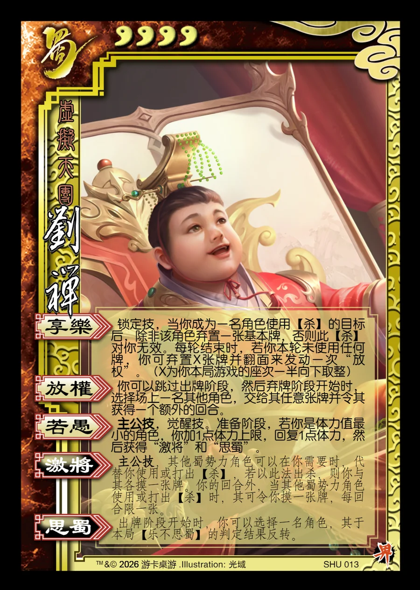

点击卡面查看大图
蜀
界刘禅
♥4虚拟天团
享乐
锁定技，当你成为一名角色使用【杀】的目标后，除非该角色弃置一张基本牌，否则此【杀】对你无效。每轮结束时，若你本轮未使用任何牌，你可弃置X张牌并翻面来发动一次“放权”。（X为你本局游戏的座次一半向下取整）
放权
你可以跳过出牌阶段，然后弃牌阶段开始时，选择场上一名其他角色，交给其任意张牌并令其获得一个额外的回合。
若愚主公技
主公技，觉醒技。准备阶段，若你是体力值最小的角色，你加1点体力上限，回复1点体力，然后获得“激将”和“思蜀”。
激将主公技衍生
主公技，其他蜀势力角色可以在你需要时，代替你使用或打出【杀】，若以此法出杀，则你与其各摸一张牌。你的回合外，当其他蜀势力角色使用或打出【杀】时，其可令你摸一张牌，每回合限一张。
思蜀衍生
出牌阶段开始时，你可以选择一名角色，其于本局【乐不思蜀】的判定结果反转。